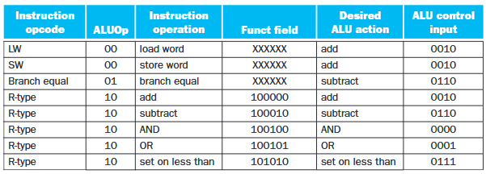
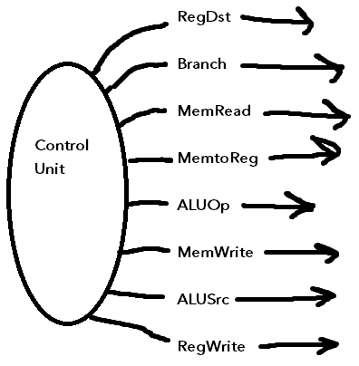

CPU components (cont.)
Example: Steps to executing an sw (store word) instruction:
- Instruction goes to instruction memory
- Instruction memory goes to RAM at address given by PC
- Instruction gets stored in "instruction register" within instruction memory
- Instruction is disassembled into parts which go to different components of the CPU
- e.g., register #1 goes to register file - 5 bits
- Register in register file goes to ALU to be added with immediate value, so that the store word instruction gets the address with the correct offset
Additional components:
- "sign-extend" component - 16 bits in, 32 bits out. Takes leftmost bit and extends to 16 more bits for a total of 32
Note: Not expected to memorize circuitry for exam, but expected to understand picture. Should be able to, e.g.:
- Remove part of picture, ask to fill in missing part (infer from context)
- What is the meaning of the load word instruction's ALU output? (answer: address (register value) + offset (immediate value) gives address in RAM to load from)
- What is the bit width of a given channel? (infer from context)
Recall the machine cycle steps:
- Fetch
- Decode
- Execute
- Write back
Each time the "fetch" instruction happens, the PC is immediately updated to the new value.
Argument registers:
- Registers that need to be read
- Always first two registers in the instruction (e.g., rs, rt)
- Need to be first two registers because those bits of the instruction are wired up to the "read register" inputs of the register file
Example: BEQ instruction steps
- PC passes instruction address to instruction memory
- Instruction register arguments passed to register file
- Argument registers go to ALU - compare values by subtracting
- Check difference:
- If difference was 0, produce a value of 1, to send along the "zero" indicator (meaning that the values were equal)
- This goes to an AND gate with the Branch control line from the opcode, to update the Program Counter to reflect the fact that the branch has occurred
- Branch amount:
- take 16-bit immediate value (recall that BEQ is an I-type instruction)
- sign-extend using the sign extend component
- shift left two bits (due to addressing mode)
- add to program counter (not necessary to use full ALU for this - can just use adder, because the immediate value could be negative)
- If the difference was nonzero, send 0 along the "zero" indicator line, so the AND gate is zeroed out and the jump does not occur, and the PC is left as is
Control units
ALU control unit:
- Gets a channel of width 4 bits, which are set based on the opcode
- Uses the below table (from the textbook; will be provided with it if necessary on the final exam)
- Controls which operation is performed by the ALU (e.g., AND, OR, NOT, ADD, etc.)

(big) Control Unit:
- Takes opcode as input (6 leftmost bits of instruction)
- Generates corresponding output, which sends bits through control lines as needed

Example use of control units: determine the values of each of the control lines for the below instruction:
add $s0, $t5, $t6
Opcode: 000000 because this is an R-type instruction.
Control line values:
- RegDst: 1
- Branch: 0
- MemRead: 0
- MemtoReg: 0
- ALUOp: 10
- MemWrite: 0
- ALUSrc: 0
- RegWrite: 1